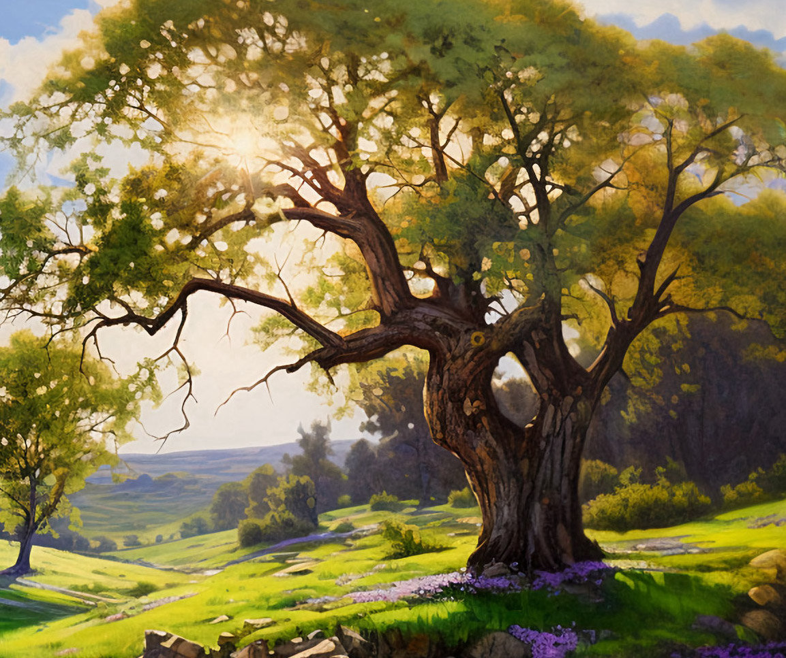

Luna, the Bravest Cat in the Valley

Once upon a time, nestled in the heart of a lush, misty river valley, was a secluded village named Butterfield. The rolling daisy fields and the dense exterior woods kept it nearly hidden from outsiders. Only the Butterfield River running peacefully through the center of town and the squeaky red watermills along its banks hinted at the tranquil existence.
The people of Butterfield were mainly grain farmers and water millers, and they enjoyed a simple, natural life. During the busy season, they harvested grain daily and milled it whenever the river cooperated. They loved their animals, but they adored cats most of all, which was easy to tell by the numerous cat-friendly bowls lining cottages all over town.
During the winter, people brought out sturdy huts to cover the food and water and provide comfortable shelter from the harsh cold. This pleased the local feline population and many more transitory cats looking for food and warmth during the winter. Everyone focused on the animals to ensure their safety and well-being.
But lately, others seemed to be focused on Butterfield too, which made the town folk nervous. Rumors told of strangers taking an unsettling interest in the valley, which naturally sparked anxious conversations.
“I heard from Farmer Thomas last week that he saw strangers upstream, near the woods, less than a couple miles from here. Not sure what they’re doing there,” said Mr. Johnson, the town’s baker.
Mr. Marshall, whose ears were ripe for local gossip, agreed, “That’s right, I heard about them yesterday. I bet they’re up to no good. I don’t like it!”
Rumors or not, the whole valley embraced springtime with glee. Amidst chirping crickets and golden dragonflies, the last freeze of winter finally melted away. Countless bees whizzed past dazzling flowers while budding oak trees hinted at the broad, shady leaves soon to follow. Deer frolicked in the meadows, mice played in the fields, and cats were hard at work reclaiming territories once again. As dusk approached, the din of frogs and insects chirping was all-consuming in the darkening skies outside.
Inside, however, was one exceptional gray-haired cat named Luna, enjoying the comforts of home by a warm fireplace. It was a modest house on the outskirts of the village, surrounded by lofty maple trees and the alluring scent of white gardenias. Luna had a best friend named Emily, a kind-hearted girl who adored her. Their home felt like the freshness of springtime, and the crackling fire made Luna feel safe and warm.

But Luna was no ordinary house cat. Her beautiful gray coat offset dramatic green eyes that sparkled with intelligence. She was fond of exploring well beyond her territory. Luna had an unusual talent for helping other animals in trouble, much preferring her motherly instincts over hunting and killing. But she was also fully content to relax at home with Emily, playing the part of a sleepy cat, waiting for snack time.
With a soft smile, Emily patted a spot by the fireplace, “Here you go, Luna, want a snack? You look sleepy. Time for your nap?”
Luna arched her back in a tall stretch and offered a wide yawn in agreement. Emily always seemed to know the right thing to say. She looked up at her friend and gave her a long, slow blink of admiration. Emily stroked her back and handed her the snack. Luna snuggled deep into her nest, circling until she finally lay down.
“Goodnight baby girl,” Emily whispered, “I love you, sweetheart.”
“Puuuuuuuuurrrrrr...” came Luna’s adoring response as she dozed by the fire in untroubled bliss.
Emily stayed beside her and worked on a knitting project, a warm surprise just for Luna, and it was almost complete. Glancing down, she noticed the gentle rise and fall of Luna’s breathing and watched the random twitch of her ears and feet. Emily pulled a small blanket over her and thought, I guess all is well in dreamland then. Emily continued knitting, but the idea of Luna’s dream gladdened her heart and brightened her face with a generous smile.
As Spring blossomed, Luna spent her days exploring the valley and hanging out with people in town, where she was always greeted by warm and friendly faces. They understood she was no ordinary cat but a feline with a heart of gold.
Luna’s dear friend in town was an older woman named Mrs. Appleton. She had a beautiful cottage with a breathtaking view of the river from her back window. Luna spent long afternoons curled up in her lap, listening to stories and purring with satisfaction. Mrs. Appleton loved Luna dearly and considered her a cherished companion.
Luna knew that Mrs. Appleton was sometimes a bit dramatic, but today, the rumors around town were genuinely unsettling. Animals seemed to be randomly disappearing, and people were growing concerned.
Setting down her tea, Mrs. Appleton gave Luna a concerned look, “I’m not sure what’s going on, but the Forester Farm down the road lost some chickens this week. Most folks say it’s coyotes, but other people have indoor pets that somehow went missing too,” shivered Mrs. Appleton.
Luna’s eyes widened.
“Sorry dear, I don’t mean to scare you like that. Just please, be careful with strangers around town. There has been lots of talk lately.”
Besides the disturbing rumors, life was idyllic for Luna. She spent her days exploring the valley and collecting head scratches from admirers. The town was her second home, but her heart belonged to Emily. Whenever Luna curled up by the fireplace, she knew Emily loved her beyond measure.
“You deserve all the best cozy naps,” said Emily.

One Spring day, as Luna was exploring the outskirts of town, she came across some commotion down by the river. She rushed to investigate and found a group of distressed people near a stranded kitten, crying out for help in the fast-flowing water. Without hesitation, Luna jumped into action.
She climbed the riverbank, inch by inch, her sharp claws scrapping and grinding into slippery dirt and rocks. With careful movements, Luna reached the frightened kitten clinging to a log. She carried it back to safety, earning cheers and applause from everyone.
“The water was so strong, and I couldn’t hold on much longer. You saved my life! My name is Whiskers. I’m so cold,” he shivered.
“It’s okay little one. Let’s get you warm and clean,” said Luna. She wrapped tightly around him to help stop the shivering, and she licked as much water off his head and body as possible. The pungent smell of fish water was everywhere but steadily improved as she groomed him. Looking him over, Luna judged he was on the older side of kittenhood, weaned, but still needing care and teaching. “Where’s your Momma, sweetie?”
“I don’t know. I remember looking and looking, but I couldn’t find Momma anywhere. Can you help me find her?” asked Whiskers.
A ripple of determination resounded through her. Luna was confident she could help find his Mother. It would just take some time. “I’ll do my best, Honey. We’ll look together,” answered Luna.

2
Emily lounged outside with a cup of tea, enjoying the fresh air of springtime. The evening was warm and sweet with the smell of blooming gardenias. Butterflies danced around the flowers, and squirrels played in the trees, chittering and flicking their tails at each other. The sunlight sparkled through the young tree leaves, casting a greenish hue on the walkway to the road.

She sighed peacefully, sipped her tea, and looked off toward the west. In the fading evening light, two shapes appeared and headed down her walk, side by side. One was much larger than the other, which she immediately recognized with a snicker. That’s Luna, she thought, but who was the other little one?
Luna and Whiskers greeted her with a friendly meow and brushed against her legs with affection. The little one mewed quietly, but repeatedly, so Emily picked him up. “Who do we have here? My goodness, you’re a beautiful little boy, aren’t you? Are you okay? It looks like you can walk alright, but I bet you’re both pretty hungry, huh?”
A loud chorus of MEOWS came the reply!
“Well then, let’s get you two inside. We have fresh chicken for dinner. I’ll start a fire, and we can have a cozy dinner together.” Emily led them inside, “Maybe later, we can even talk about the B word,” her voice dropping to a whisper.
Whiskers paused and asked quietly, “Luna, what’s the B word mean?”
“Well, I don’t think she means bed. Let’s not worry about that right now because we have a lovely dinner in store, trust me.” Luna licked her lips and flicked her tail in excitement. She was almost as hungry as Whiskers, come to think of it.
Whiskers was delighted and devoured the shredded chicken with abandon. This was all new to him, and he couldn’t get enough. Luna had already finished, licking her paws with amusement at his enthusiasm. He’ll sleep like a rock tonight, she thought. Looking at the fireplace, the crackling logs were like a siren song. A nice nap by the fire would be just the thing for two cats with full bellies.
Emily cleared the table and gathered her knitting to sit by the fire. Luna and Whiskers were there almost before her, presenting a few dramatic stretches before lying down. Whiskers cuddled in close to Luna with a stream of purrs and looked like the most content cat in all the world. Emily looked them over and said, “Well, you do need a bath, little one, but I don’t have the heart to disturb you. Sweet dreams you two,” sending them both several eye kisses.
Emily started to knit but kept a loving eye on them. Whatever they were up to, she was satisfied that Luna had brought him home for a good reason. She was glad they would have a home base for whatever adventures they were off to.
Just as Whiskers was about to drift off to sleep, Luna gave him a proper cat bath. She whispered in his ear, “Sleep well, my friend. I am right here with you. Tomorrow, we can start searching for your Momma. I promise we won’t give up.”
Luna and Whiskers began their search the next day. Their initial efforts revealed little, but they were persistent. Days passed, each starting with hope but ending in fatigue and disappointment. Even so, Whiskers followed Luna with enthusiasm. His young eyes glowed with admiration, seeing that his new friend wouldn’t give up. Luna, so accustomed to solitary escapades, found his company a delightful change.

“Whiskers,” Luna began, her voice soft against the rustle of leaves, “tell me more about your Momma?”
They had paused for rest in the shade of a towering oak tree, a soft breeze rustled through the branches overhead. Whiskers, sitting across from Luna, lowered his gaze and thought hard.
“She is beautiful,” he whispered, “her fur is soft and warm, like the way sunlight feels in the morning, and she purred a gentle lullaby each night that put me fast asleep.”
Luna listened attentively, her green eyes filled with compassion. She nudged Whiskers gently with her head, urging him to continue.
“She had a scent,” Whiskers murmured, his eyes far off in thought. “A calming one. I used to snuggle deep into her fur to breathe it in. It was wonderful and made me feel safe.”
“You’ll recognize it again, I trust, once we get close to finding her?” Luna prodded gently, hoping to hear that he would.
“Yes,” a confident glint in his eyes, “I’ll remember.”
Luna purred softly, her heart swelling with a newfound admiration for Whiskers. She rested close beside him, her tail wrapped around him, a comforting gesture that spoke louder than words.
“We’ll find her, Whiskers,” Luna promised, her voice unwavering. “No matter what, we’ll find her.”
Whiskers blinked at Luna, his eyes shining with unshed tears. He seemed to draw strength from her words, his tiny chest puffing up with newfound determination.
“I know we will, because you’re here now.”
As they sat under the shade of the old oak tree, Luna realized she had found more than a friend in Whiskers; she had a new kind of family and a singular purpose. Whiskers snuggled close, and they drifted off to sleep for a while, so glad to have each other.
They traveled to the southern edge of the valley. Luna shared her knowledge with Whiskers, teaching him to follow scent trails and remain as quiet and patient as the morning air when needed. The two of them were becoming quite a team, exploring the valley together, and their bond grew with each passing day.
One afternoon, they returned home earlier than usual, their bodies weary and covered with mud. “Oh, you two! What a lovely collection of dirt!” Emily chuckled. A bath for them both and a warm dinner were clearly in order. “Come on now, the dreaded B word for both of you. I’m not taking no for an answer this time, and that’s final. We’ll have a lovely dinner after. You’ll see!”
Bathed and fed with a meal better than they could remember, Luna and Whiskers snuggled in front of the fireplace. Emily sat with them, content in her knitting and their company. Emily’s gaze shifted between them, her heart swelling, “You’ve had a busy day. I think it’s time to say goodnight, my little travelers.”
Luna and Whiskers offered her a sleepy blink, and their purrs complemented the crackling fire. As they drifted into dreams, Luna’s thoughts lingered on their mission. She could see the hidden yearning in Whiskers’ eyes every time they came home unsuccessful. There was no giving up. One way or the other, they had to find out what had happened to his Momma.

3
On a cold and dark afternoon, a stranger named Mr. Grimshaw arrived in Butterfield. A tall man, impeccably dressed in a charcoal suit, stepped out of an expensive car with darkened windows. His boots crushed some blooming daisies underfoot as he headed toward the center of the village. The man bore a sinister air that clashed with the idyllic atmosphere of Butterfield. His narrow eyes were eagle sharp, and his thin lips curled in a vicious smile, no doubt hinting at the unsettling plans he had in mind.

News spread quickly, and even Luna was on the lookout. Emily and Mrs. Appleton said he was probably dangerous. Mr. Grimshaw claimed to be a businessman who had taken an interest in their beautiful valley. His silver tongue weaved stories of prosperity and development. He offered investment deals and painted pictures of fortune, wealth, and luxury for all. However, behind all the seductive words and the false persona were ulterior motives.
The rumors around town were true, Grimshaw had set up residence in the woods north of Butterfield. He was not alone; a handful of unsavory characters were his partners. They were a shady bunch, assisting him in his underhanded plans.
“You two, move those cages back into the corner. We need room for more,” shouted Grimshaw.
“Boss, what's the point of all these smelly pests?”
“Don’t I pay you enough to keep your mouth shut! Just do it!” barked Grimshaw.
Grimshaw’s interest in Butterfield was not just commercial. As his operations grew, so did his targets. Cats and dogs began to go missing, leaving many families heartbroken. His plans were far from straightforward, but his associates knew he enjoyed spreading fear and chaos as much as hoarding profit and wealth.
Grimshaw had another dark motive. He heard rumors of a cat with exceptional abilities and wished to capture this special feline, believing it might be a worthy addition to his future endeavors. Little did he know that Luna was braver than he could imagine. The valley was her home, and she would not let him destroy it. His arrival marked the beginning of a match between the greed of a vile, selfish man and the bravery of a small cat and her friends.

4
Luna and Whiskers headed out of town, starting their search near the river, but today heading upstream instead. The rolling waters bounced over the rocks, giving them a soothing ambiance for walking. Whiskers looked up at Luna and gave her a curious look.
“Where are we headed today, Luna?”
“I think we need to try something different. We’re getting nowhere south of town. We’ve covered almost every spot I can think of down there, but we keep turning up nothing. I think a different direction might give us a little more hope. I know it’s difficult to return every day without learning anything.”
Whiskers swatted at the ground as he walked, knocking a few small rocks out of the way, “Yeah... I want to know if she’s okay, even if I can’t be with her. Knowing that would make things easier.”
Luna sometimes forgot Whiskers was so young; his words occasionally blossomed with wisdom, and her chest filled with pride, “You’ve been so patient, sweetheart, thank you for sticking with me.”
As they walked along in silence, Luna’s mind returned to the dangerous stranger in town. What was he up to, and what were his real intentions? Why did some people so easily fall under his spell? It seemed obvious enough that he wasn’t to be trusted. A little investigation might be in order. We’re already heading in his general direction. If an opportunity presents itself, we’ll be ready.
Their hike north eventually left the Butterfield River behind them, with the peaceful sounds of flowing water yielding to soft breezes from the west. They emerged into a large meadow filled with supple grasses and wildflowers, and the scent of lilacs filled the air. Here and there, large shade trees and rocks dotted the otherwise flat landscape.

Luna could see a path leading north. It looked overgrown, but that would be ideal for their stealthy progress. The only creature aware of their passage was a curious little squirrel who thought it strange to see two cats traveling side-by-side in the middle of the day. They were a good ways off, but it hurried up the nearest tree to hide anyway.

The day passed without events, and the morning turned to noon. The sun declared its command of the day, burning off any remaining mist and fog. Luna looked back and noticed Whiskers trailing behind at a slower pace than usual. His nap time was overdue, and she was surprised he lasted this long. Come to think of it, she would quite enjoy a nap herself. A tall shade tree was just ahead and to the left. That might be the perfect spot for some sleep.
“Come on, Whiskers. It’s nap time. Up the tree you go. That large branch over there. See it? Come on now, let’s go!”
Whiskers was overjoyed, and with a sudden burst of energy, he raced up the tree in front of her. They settled down together, with Whiskers nestled deep into her belly like a baby. Luna laughed to herself, purred exquisitely, and licked Whiskers’ head. He needed a full bath, but that would have to wait. Whiskers purred in delight, but only briefly until he was fast asleep.
Luna thought, Oh, how I love this little kit. What will I ever do without him once we find his Momma?
The branch was excellent. It offered enough cover to keep them safe but presented a commanding view of the path below. Luna felt better to know it was free of anyone coming or going. The day’s heat pressed on, but their naps were comfortable in the shade. Little by little, Luna’s purrs resided as she drifted asleep too.
The afternoon heat waned slightly, balanced by a welcome breeze and fluffy clouds overhead. It was a glorious afternoon for sleeping, where one did not want to budge for any reason. Luna stirred, opened her eyes slowly, and had a look around. Nothing was happening below, and no signs of activity on the path. Feeling refreshed and content in their safety, Luna looked down at Whiskers. He was half on his back, his mouth slightly open, and his front legs twitched as if running in a dream. She didn’t have the heart to wake him, but judging by the direction of the sunlight, it was already mid to late afternoon, so they had seriously overslept. There was still a lot of distance ahead of them, and she didn’t want to lose time.
Licking his head to gently nudge him awake, she said, “Honey, it’s time to wake up. Sorry sweetie, you looked so content, but we must get moving again.”
Whiskers slowly opened his eyes and rolled over on his side, “Awww, can’t we keep sleeping? This is the best tree ever!”
“I know, Honey, it’s lovely... I would love to, but it’s late, and we have more exploring to do north of here. I feel like we might be getting close to that Grimshaw hideout. Even if we don’t pick up the scent of your Momma today, we may be able to see what that bad man is up to.”
“Okay, I’m getting up," said Whiskers. "Can we come back to this tree later and sleep some more?”
“Of course we can. That would be wonderful. I’ve been watching the path, and all is clear. Are you ready?”
“Yes, let’s go. I’m ready.”

5
The path led north into the deep woods, but there wasn’t a soul about except for Luna and Whiskers. As they walked, they watched the meadow grass yield to towering oaks, with lofty canopies rising above them at incredible heights, blocking the sunlight and lowering the temperature. Whiskers looked up in awe, having never seen trees so grand before. From the treetops, the shrill cries of unknown birds raised a false alarm; the flying creatures were hardly in any danger from two little cats strolling on the forest floor so far below.
“Luna, are we headed the right way?”
“Well, I’m not sure, but this place intrigues me. We may find some secrets if we’re alert.”

Luna caught the familiar smells of deer and other forest animals musing about. Whiskers stopped occasionally and inhaled deeply, hoping to discover any lingering trace of his Momma. Luna taught him to open his mouth wide when inhaling, dramatically increasing his scent-gathering abilities. It worked great, but he still hadn’t detected anything. He also thought it looked ridiculous but was embarrassed to tell Luna so.
The path led onward, with a small gully before them, followed by a blind crest higher up, another fifty yards ahead. Luna checked behind them and detected nothing. Strange how little activity was about. What could that mean, Luna thought?
“Whiskers, see that crest up there? There seems to be a clearing on either side of it. Maybe we’re not on the main path through the forest. Let’s be cautious.”
They approached the crest with a stealthy trot up the southern slope but could not see beyond it. Luna sniffed cautiously and detected something brand new. “Whiskers, you smell that?”
“Yes, I think people have been up there.”
“That’s what I thought, but I don’t hear anyone up there. People don’t care how noisy they are, so we’re probably safe. Let’s have a look.”

The crest of the hill revealed nothing but a dirt road that stretched to their left and right. The way leading right went relatively straight, leading to an eventual clearing in what must have been the eastern edge of the woods. The Butterfield River would be out that way if they walked far enough. To their left, the road led deeper into the woods, disappearing around a bend made invisible by thick bushes and trees on either side.
In front of them, they found some curious grooves in the dirt, but they were dry. Luna concluded the tracks were recent, probably two days old, following the local thunderstorms the other night.
“Whiskers, these are human vehicle tracks. We need to turn right and head deeper into the woods. I have a feeling we might be close to Grimshaw’s place.”
Whiskers thought about it and licked her paws, “Luna, I can smell that many animals have been this way too. What does it mean?”
Luna flicked her tail in frustration, accidentally smacking a beetle behind her, “Yes, I noticed that too. I’m not sure what it means, but I don’t like it. Come on. We might be able to figure out what’s going on.”
They turned left on the dirt road and pressed on. The woods seemed to grow dark and close as they rounded the bend and headed north again. Was it Luna’s imagination, or had the birds in the forest stopped chirping? Whiskers looked around and felt cornered by some invisible force, or so he imagined, unhappy with this part of the journey.
They walked a few more minutes until Luna stopped them. Up ahead, the road appeared to end at a series of dark buildings.
“There it is, Whiskers. That must be Grimshaw’s camp. Let’s take this slowly. Hey, wait! Where are you going?”
Whiskers dashed forward at full speed as if chasing a rabbit! What in the world was he thinking? She took up the chase, trying to catch him, but it was like trying to beat a tornado. Laughing to herself, she must be getting old, unable to keep up with his burst of speed.
“Whiskers, stop! We don’t know what’s up there. Wait for me!”
Whiskers sprinted ahead, suddenly on a desperate mission. As they approached the first building, Luna knew why. Animal scents filled the air and grew more potent by the second as they neared the compound.

“Whiskers! Don’t go in there yet!” He was almost at the front door. He came to a skidding halt, his body quivering, as Luna finally caught up with him. “What are you thinking? Somebody might see us!” scolded Luna.
Whiskers pranced back and forth, trembling and shaking, “She’s been here, Luna! Momma’s been here! I have to get inside!”
“What? She’s been here? Whiskers, this is great! But please, just give me a moment. I need to catch my breath, and we need to think clearly. Come over here for a second.” Luna wrapped her tail around him and licked his face. She was overjoyed at his discovery but wary of their current location. No sounds were coming from inside the building.
Whiskers cuddled closer and purred, “She’s been here, Luna. We’re so close!”
“You’ve done good, Whiskers. Your Momma would be so proud of you.” Luna looked up and studied a window near the front door. It wasn’t that high, and the bottom half was open.
“Whiskers, if you climb on my back, I could stretch up against the wall under the window, then you could stand and peek into the window. NO leaping up there! You hear me? Just peek inside, and go slowly.”
Whiskers blinked in agreement.
“Okay, ready... one, two, three.”
Whiskers peeked inside, “It’s a large room. No people in sight. I see a table and empty chairs. There’s something on the table. There are open doors to other rooms, but I don’t see or hear any movement in there. Wait! Luna! Momma’s been inside this building! I can smell even better now! I must get in there!”
Before Luna could say no, Whiskers leaped to the window ledge and disappeared inside.
6
Luna slapped her tail against the building, “I knew he was going to do that!” She sneezed and shook her head, then leaped onto the window ledge after him. He was pawing at some papers on top of the table.
She looked around, and it seemed all clear, “Whiskers, I’m coming in.” Luna joined him on the table and looked down at the papers. “These look like plans or something. Maps or designs? I’m not sure. We’ll come back to them. Let’s check out the other two rooms.”

The first room was not much more than a closet. Just some human clothing, a few boots, and a plastic raincoat, so they moved on to the second room. It was large but mostly empty. A closet on the back wall triggered their noses in alarm as soon as they entered the room.
As they inched across the floor to the closet, the room gave off a dark vibe, and Luna felt suddenly watched by unknown eyes. Whiskers sensed it too, and nervously clenched his claws. They peered inside, and the smells of animals nearly overwhelmed them. But there were no animals here.
In the corner of the closet was a deep pile of discarded objects, reaching about halfway to the ceiling. Luna reached out to the stack slowly, paused, then struck it quickly as if it were a viper. She knew what it was instantly but wasn’t about to search the entire pile. “Did your Momma have a collar?”
“No, I don’t think so.”
She extracted one of the objects from the pile and laid it between them. “Whiskers, these are pet collars and tags! This one has a phone number. We need to get this back to Emily or Mrs. Appleton as quickly as possible so they can call the police.”
“NO!” cried Whiskers, “There are more buildings! Momma could be here!”
Luna hated this place and wanted nothing more than to leave immediately, but she had to admit, Whiskers was correct. “Okay, you’re right. There is a big barn out back. Let’s get out of this horrible place and check there. One thing first, go back to the table. I want to grab something else on the way out.”
Whiskers darted out of the closet. Luna picked up the collar in her mouth and was right behind him. Dropping the collar on the tabletop, she said, “Try and help me tear off a piece of this blue paper. I think it will help explain what’s going on.” She ripped off a piece while Whiskers held down the rest “That should do it. Boy, if I ever wished to have human hands and pockets, now is the time! Let’s go!”
“Luna, you carry the collar. I’ll carry the paper.”
“Ha! We’ll look like a couple of bandits together!” laughed Luna.
They leaped out the window together, happy to escape that nasty place. The barn out back was only about twenty yards away, but it had no windows, and the door had a great big lock. Whiskers had the obvious answer and started digging like a honey badger!
“Luna! Momma’s been here too! I think she’s inside the barn! Help me dig under this door! Hurry!”
The two of them dug side-by-side like crazy cats. Whiskers was in a frenzy, trying to squeeze his little body under the door. He was almost through, but Luna would need more digging to fit. After several more strokes, he popped through the hole and disappeared under the door. She heard him sprint off into the barn, and he was gone.

7
Whiskers flew through the barn like wildfire. Along the walls were stacks of cages. He could see animals of many different sizes; cats, dogs, goats, and even snakes! Many of them cried out for help and couldn’t understand why they were being held captive like this. As Whiskers rounded a corner, he spotted an orange cat near the back, in a cage next to a table. He ran to her in tears, “I found you, Momma! I found you!”
Momma raised her weakened head to look around, then saw him, “My boy! My beautiful boy!”
Whiskers jumped on the table beside her and pressed his nose against hers, “Momma, I missed you so bad. I was so afraid. I love you!”
Momma purred in relief to see her boy again, “Oh my boy, my brave little hero! I love you so much! I’ve been thinking about you non-stop!” She tried to lick his nose and face, but the cage between them stole the warm, loving embrace they both longed for.

“Momma, are you hurt? We have to get you out!”
“No, I’m not hurt, but I’m so thirsty. The cages are locked and the bad men have all the keys. What should we do?”
“Don’t worry, Momma. Luna will be here in a moment. I thought I’d never see you again!”
“Luna?”
“Yes, she saved my life and helped me find you. She’ll know what to do!” With perfect speak-of-the-devil timing, Luna jumped onto the table and slid to a halt before them. Seeing them finally together, she felt like her heart might break. She took a few gentle steps forward but remained silent out of respect.
“Momma, this is Luna, and I could not have done anything without her help!” added Whiskers, nearly shouting in his excitement.
“I have no words,” said Momma, “you saved my boy and brought us back together again. How can we ever thank you enough?”
“Seeing you together means everything to me, but we must get you out of here. We need to get everyone out of here,” said Luna, looking at the many other cages around the room.
“Luna, what are we going to do?” asked Whiskers, his tail flicking hard on the table, desperately hoping she already had the answer.
“I’m going back to town to get Emily. She can tell the police and get Mrs. Appleton to bring us back up here, along with the other townsfolk. They'll be here in a heartbeat once they know where their beloved friends have been taken. You stay here and protect your Momma. I’m sure I couldn’t convince you otherwise at this point.”
“Oh, Luna, please be careful!” said Whiskers.
“I’ll run as fast as I can,” she answered with a wink, “This will be one slobbery journey with all these things in my mouth. Wish me luck!” Luna picked up the collar and paper and raced away like lightning. She was under the barn door in a flash and then gone.

8
Luna ran hard and kept going as fast as possible. Cats aren’t built for endurance, she thought, but everything depended on her now. The animals would need food, water, and maybe medical attention. She knew a few shortcuts, and her house was closer than Mrs. Appleton’s, so she headed straight home for Emily. The journey home seemed horribly long, given the terrible consequences if she wasn't successful.
Oh, Emily, please be home. If ever there was a time I need you home, it’s now, thought Luna as she sprinted the last hundred yards to home. Almost there. Bang! Into the cat door with a crash and then into the kitchen. Luna looked around quickly in a panic. Is she here? Is she here?
“Well, finally, there’s my girl,” said Emily, walking around the corner, “I’ve been worried sick about you, sweetheart! Where in the world have you been?”
Luna knew it would take some over-the-top drama to get the point across. She started with several unusually loud MEEEOOOOOOWs, followed by a tall leap into the air with a perfect landing. She rolled over on her back, fully exposing her belly, and dropped the collar and paper onto the kitchen floor. Her mouth burned from clamping down so hard on those things to get them home safely.
“Oh my, what is going on? What have you got there?”
Emily read the collar, “Hey, I recognize this tag. This is Mrs. Yoder’s dog, Terry. He went missing with all the other animals. Where did you get this?”
"MEEOOOOOOW, WRRROOOOWL!"
“What is that paper? It looks like a drawing, can I see?”
Luna jumped up, presented her best purrs, and impatiently weaved in and out of Emily’s legs non-stop.
“My goodness, what’s gotten into you?” said Emily. “These look like blueprints or something. Wait, at the town meeting the other day, that Mr. Grimshaw was carrying papers just like this.”
"WRRROOOOOOOWL!!"
“Luna! Did you find the animals? Was it Grimshaw?”
“MEEEOOOOOOOOOOOW!!!” and then Luna added a remarkably splendid backflip to leave no doubt.
“I have to call the police. I need to call Mrs. Yoder. I’ll call Mrs. Appleton. We know where Grimshaw is hiding. He’s not been paying his lease, so the town’s ready to kick him out. But if he’s taken all those animals, he’s going to jail!”
Luna bounced off the walls in happiness. Her plan was working, and Emily wasted no time. She called the police first, then Mrs. Yoder and Mrs. Appleton. Mrs. Yoder would call her neighbors; some of them had lost pets too. Word would get around fast. Mrs. Appleton was coming over right now to pick them both up. Grimshaw’s hideout was about to get very busy!

9
Whiskers lay beside his Momma’s cage, getting as close to her as possible. She was exhausted and dehydrated. Whiskers was able to give her some relief; he found an old rag in the barn to soak in the muddy puddles outside. Momma could get some water out of it, but the rag and the muddy water were filthy. He could not find fresh water anywhere. Furious and depressed, he gave up and lay next to her. Oh, how he would love to take a bite out of whoever did this to her.
She was able to sleep a little, but he could not. His mind was spinning about how to get her out. Luna would be coming back, he thought. She had to. Just a little longer, he thought, just a little longer.
He must have drifted off to sleep because he woke suddenly to the sound of vehicles outside. Oh no! Have the bad men returned? He tensed and ached his back, ready to fight with all his might. He hissed at the creaking door and watched it shudder as if someone were trying to break it down. That’s okay. I’m ready to rip them up, he snarled.
The door splintered down the middle, busting open big and wide. Mr. and Mrs. Yoder stepped through, followed by Mrs. Appleton and Emily! As he watched Emily enter the doorway, Luna was in her arms, meowing loudly to jump down. Behind them, other people hurried in to look for their beloved friends and release them from the cages. They carried food and water for all the animals.
Luna came running and jumped onto the table with Whiskers, licking his ears and purring like a motor.
“Luna!” cried Whiskers, “Luna, you did it!”
“We made it in time! I was so worried those bad men might have beaten us to you. Have they been here?”
“No. Nobody has been here since you left. It was so scary waiting and not knowing who might get here first. Oh, this is like a dream come true!” cried Whiskers. He looked over to see Emily and Mrs. Appleton lovingly tending to his Momma, giving her all the water she could drink. His heart was breaking, seeing how thirsty she was.

Luna flicked her ears in excitement, “Whiskers, there’s more! The police are coming. They should be here any moment! Grimshaw has not paid his lease, and with everything we found, plus the abduction of these animals, he’s going to jail! Can you believe it?”
“This is a true blessing, Luna. You got my Momma back. You saved my life. You saved all these animals’ lives. Luna, you’re a hero!”
They touched noses, bumped foreheads, and purred gently to each other. Whiskers observed gratefully as his Momma drank more water. She was out of the cage and resting on the table beside him now. Around the room, many other thirsty animals were getting water too. They were all coming back to life right before his eyes. It was miraculous.
Outside, more vehicles arrived. It was the police! Luna and Whiskers had to see what was happening. “Momma, I need to go outside for a moment. Will you be okay here?”
“Of course. I’m feeling so much better already.”
“Okay, we’ll be right back.” They raced outside to see what the police were doing. There were several vehicles, and flashlights danced through the night, buzzing around all the buildings in the compound. Whiskers could see flashlights inside the first building. Those plans on the table might be evidence of whatever Grimshaw was plotting against the town.
The police didn’t look too pleased to be out here late at night but were happy to recover the town’s animals. So far, they hadn’t seen any sign of Grimshaw or his gang, but they searched every building to ensure nobody was hiding out.
Just then, another set of headlights appeared, and a dark car drove up close to the barn. Shutting off the headlights and engine, the driver exited the vehicle. Luna noticed a pair of fancy black shoes, shined to perfection, and was highly amused to see them step right into a deep puddle of mud. Cursing furiously at the ground, the driver turned and spat profanities into the air. It was Grimshaw himself.

“Here now. What are you doing? I order you off my property immediately!” shrieked Grimshaw.
“Order? Is that so?” said Police Captain Miller, turning the flashlight directly in Grimshaw’s face, temporarily blinding him.
Trying to block the light with his outstretched hands, Grimshaw continued, “You have no business on my land. I want everyone to leave now!”
“Your land?” challenged Captain Miller. “Seems it isn’t yours anymore, seeing how you were too greedy to pay the lease. Also, these animal kidnappings are severe crimes in our town.”
“Animal kidnappings, I have no idea what you’re talking about,” said Grimshaw, using one hand to block the light and the other to wipe mud from his shoes.
“That’s okay, we can let your memory recover in jail because you’re under arrest. You’ll have at least three glorious nights there, all expenses paid by the County until we figure this out.”
“Jail? Arrest? Ridiculous! I have the best lawyers on the coast. I’ll have your badge while I’m at it, Captain!” spit Grimshaw.
“I’m not too worried,” said Captain Miller with a casual flair that infuriated Grimshaw enough to turn his face red. “Boys, you want to make this official? Get out the cuffs, read him his rights, and then get this trash away from me.”
Grimshaw was enraged, but his threats were baseless, “This is ludicrous. I’m calling my attorney. I’m not talking to any of you! This isn’t over!”
Luna and Whiskers sat quietly and watched, enjoying all the sweet justice they had earned. Staring at Grimshaw in victory, they watched as the cops led him to the cruiser. Noticing them at the last moment, Grimshaw looked down and sneered, “What are you looking at, stupid fleabag animals?” He attempted to kick mud at them but accidentally tossed a shoe off his left foot instead. The cats laughed as he walked with one foot sinking deep into the mud with each step. They could tell he was about to boil over and lose it. A horrible shriek of anger rose into the night as the cops placed him into the car. It was very satisfying.
“Awful human,” said Luna, flicking her tail at Whiskers in satisfaction.
“I want to rip his face off,” hissed Whiskers, “but let’s see how Momma is doing instead. I think we’re ALL going to sleep like kittens tonight!”

10
The town rejoiced and hailed Luna and Whiskers as heroes. They organized a grand celebration in their honor. There were banners, decorations, and a feast fit for royalty.
Whiskers’ Momma snuggled up to him, licking his head and face, “I’m so proud of you, Honey. You and Luna saved us all.”
Whiskers purred, saying, “I couldn’t have done it without her, Momma. She’s the real hero. Have you thought about what Mrs. Appleton offered us?”
“Yes, and I think it’s a grand idea. I’ve had far too many misadventures in my lifetime. I want to relax in comfort for the rest of my days. Will you come with me?”
“Oh yes, try and stop me! I think Mrs. Appleton said we could move in right away. She’s been so kind to me and Luna; you’ll love her stories. Wait till you see her cabin by the river. It’s beautiful!”
During the celebration, Emily presented Luna with a special gift. It was a collar and tag that read, My Brave Friend and Hero. Emily fastened the new collar around her neck, giving her a secret wink and smile. “You’ll always be my hero, Luna. I’m so proud of you!” said Emily.

Luna purred joyfully, almost blushing, feeling proud of their victories and grateful for Emily’s praise and love. Mrs. Appleton was there too, and Luna noticed a trickle of happy tears on her face as she clapped her hands in full approval of the award.
The celebration continued while the guests of honor sat together and enjoyed the superb food and attention. Whiskers was too proud to accept any awards. Having his Momma back was all that he needed. They both lay next to Mrs. Appleton’s ankles, their tails wrapped around each other in complete happiness. They made such a lovely trio, but Luna could tell they were ready to go.
Emily noticed it too, and gave Luna a knowing look and scratch on the head. They all got up quietly and made a sneaky exit. Emily and Luna, Mrs. Appleton, Whiskers, and Momma left the public celebration for a private one at Mrs. Appleton’s cottage. Some townsfolk noticed as they headed down the street, but most didn’t; they were all having such a great time.
Luna’s favorite part of their stroll back was the red brick pathway connecting the road to the front of Mrs. Appleton’s cottage. Ferns and Japanese Maples fell on either side of the path, and large white stones defined the edges. The front yard was covered with tiny wildflowers that gave off the most inviting scent. It attracted many bees, buzzing about, working away.
Directly behind the cottage was the Butterfield River, flowing gently tonight with a lovely ambience. Tall ornamental grasses straddled its banks, with more wildflowers near the water’s edge. It was a gardener’s paradise and one of the things Mrs. Appleton was most proud of. Luna felt like she was walking into another world whenever she came here to visit.
On the back of the cottage was a large floor-to-ceiling window with a theatrical view of the river below. It still took Luna’s breath away each time she entered. Suddenly, a joyous realization hit her. This house would now be Whiskers’ forever home. What a fitting reward for all the hardships to get here. She looked sideways at Whiskers, then gave him a nudge of affection with an extra-hard head bonk.
“Hey, what you doing?” laughed Whiskers.
“I’m just happy,” said Luna. “Happy for you and your Momma. She will love it here. I can’t wait until she sees the view of the river. She deserves it.”
“I know, she does. Thank you, Luna... for everything. I never would have found her alone. You saved us both.”
Luna blushed, and she nudged him again. Whiskers flicked his tail hard and gave her a playful swat back. As they neared the front door, Mrs. Appleton welcomed them inside. A large banner above the dining room table greeted them, Welcome, Our Brave Heroes!
Momma froze, ignoring the sign, her gaze drawn immediately to the beautiful windows and the flowing river out back. She took a few small steps forward, then froze again.
“Go ahead, dear, have a look,” said Mrs. Appleton. “The view back there is all yours, now and every day.”
It was beyond words and more incredible than she had ever hoped for. There were stunning views of the river and trees and large bright sunny spots across the carpeted floor, with natural heating amplified by the glass in the windows. Everything was ideal for napping and peaceful meditation. And she was here with her boy, and they were both safe.
“You like it Momma?” said Whiskers.
“It’s beautiful. I’m overwhelmed. Is it really ours?”
“It is... and we’re together.”
Momma wrapped her tail around Whiskers and licked his nose. “We are. We’re together again. That’s the best part.”
“The best part.” agreed Whiskers.
Emily and Luna joined them by the windows, then Mrs. Appleton came over. They admired the beauty outside, and enjoyed the peaceful view in silence. Plenty of food and drink was waiting, but there was no point in rushing the moment. For now, they were all content to enjoy this perfect time together.

11
With the threat of Grimshaw behind them, things returned to normal in Butterfield. Luna and Whiskers became symbols of courage and hope, inspiring everyone that knew them. Life in the village was simple again, just like old times.
By now, Emily was a young woman, but she had no plans to leave Butterfield. The valley was her home. She would never think of uprooting Luna from her beloved friends and family. Luna was always on her mind, and their bond remained as strong as ever. Emily looked over, “Cozy fire tonight, Luna. My special girl.”

Luna heard those sweet words, reached out, and placed her paw in Emily’s lap. She didn’t have enough purrs to express the love for her dearest Emily.
As the years passed, Luna grew older, and her adventures became less frequent. She spent more and more time resting by the fireplace with Emily, and Whiskers visited them regularly. They often snuggled up on cold, snowy days to enjoy story-time together. Emily sipped strong hot tea and read Luna’s favorite stories aloud. Luna listened in carefree delight while licking her paws, cleaning her coat, or playing with little bits of string. Sometimes she was rapt with attention; other times gently napping.
Emily adored timeless moments like this with Luna, grateful for their life together and the beautiful treasure that she was. Their stories often went late into the night, with the fire light flickering across darkened windows, only hinting to the critters outside what magic might be happening indoors.
One evening, near the start of spring, an unusually late snowstorm swept through Butterfield, covering it with a luminous blanket of snow. Giant snowflakes fell from the sky, and Luna sat outside on the front porch to enjoy the glorious contrast between the deep black sky and bright white ground. Snowflakes danced in the air and landed on her nose, but she hardly paid any notice, enchanted by the storm and the brisk night air.

It was a beautiful night, but Luna finally felt the cold drafts around her. She was torn between staying out and returning inside, but before she could decide, something happened inside her. It was a curious, strange feeling. She felt suddenly ill and went back inside the house immediately. Emily was reading a book by the fire, so Luna jumped into her lap and pressed hard against her, trying to warm herself and make this odd feeling of illness disappear.
Emily held her close, noticed her shivering, and pulled a soft blanket around her, “Luna girl, you shouldn’t sit out there in the snow like that. You’re freezing. Come on, we’ll sit a little closer to the fire.” Emily sang Luna a gentle song, held her close, and rocked her to sleep. Her shivers faded, and her body seemed to relax.
The next day, Luna slept much longer than usual and barely had any appetite. Emily wrapped more blankets around her because the shivering had returned. She grew concerned and called her friend Dr. Greenthorn for help. He arrived right away to perform an exam. The doctor concluded that Luna had a virus and the medicine would take a while to help.
When Whiskers heard about Luna’s illness, he came right over. Emily was grateful because Whiskers stayed with Luna non-stop, day and night. Whiskers wrapped himself around her, keeping her toasty warm, with extra blankets covering them both. After a few nervous days, the medicine began to work, and Luna felt well enough to eat. Emily prepared some of her special chicken broth and was grateful to see Luna eat a whole bowl.

After a few more days, Luna started feeling better but not entirely well. Whiskers stayed with her, purred to her, and kept her clean with endless grooming. At first, she seemed to make some progress, clearly fighting the virus, but then relapsed again with fatigue.
Over the next few weeks, she had good days and bad days. Some days she walked about the house and enjoyed the fire with Emily; other days, she slept most of the time. The medicine worked sometimes, but other times not so much. Dr. Greenthorn visited regularly and did everything he could to help.
Whiskers never left her side, often grooming her with affectionate ear licks, trying to keep her warm and happy as possible. Each night when they cuddled together, he whispered as she once did, “Sleep well, my friend. I am right here with you.”
There were some joyous days when Luna seemed back to her old self, but overall, the illness took a toll on her strength. Emily nursed Luna tenderly, feeding and loving her, often whispering, “We’re right here with you, baby girl. We love you.” Emily didn’t want to admit it, but she could see a slow decline. As the days wore on, it became clear that Luna’s time might soon be nearing an end.
One beautiful sunny morning, Luna perked up, feeling especially strong and alert. She gathered all her resolve for one last adventure. With Emily and Whiskers at her side, Luna ventured down into the valley. She visited her favorite spots, grateful to experience the beautiful fields, trees, and ponds once again. She noticed her friends had not forced her back home out of fear that she may suddenly grow ill again. Instead, they stayed by her, letting her guide the way. Luna walked along, knowing where she was headed, and felt content.

As the sun set over the valley, Luna found a peaceful spot by the river, surrounded by nature’s beauty. With Emily and Whiskers beside her, she closed her eyes and took one final breath, knowing she had lived a life full of friendship and purpose. Emily and Whiskers snuggled in close so that Luna wouldn’t be alone. Luna could feel their warmth and love, and she had no fear. Her final thoughts were of them, and then she let go.
With blinding tears and unbearable loss, Emily had to say goodbye to her dearest friend. “Oh, Luna, my sweet baby girl. I love you, Honey,” whispered Emily, her voice cracking and her tears wetting Luna’s beautiful gray coat. She planted her head deep into Luna’s fur, unwilling to let go. She held Luna close and kissed her nose one last time.
Whiskers had no words, and a deep sadness swept through him. He owed his life and Momma’s life to Luna, and today he lost his most cherished friend. Putting his face next to hers, he rubbed her forehead and gently licked her ears goodbye.
Emily and Whiskers dug a grave right there at Luna’s chosen spot. They covered her with beautiful flower petals and wrapped her in palm leaves. They handled her delicate body with tenderness and sacred respect.

After the burial, they placed some heavy rocks on top for protection. Emily laid down some flowers and then one final stone, which was smaller. There was a curious but distinct pattern on it; the unmistakable image of a feline paw print. Emily kissed the stone and placed it on top. She lit a candle, then stood silently with Whiskers nestled deep in her arms. Luna’s collar, the one that read, My Brave Friend and Hero, she kept for herself, to be cherished for the rest of her days.

Epilogue
Butterfield mourned the loss of their most precious feline hero, but they also celebrated her legacy. They erected a statue in her honor, depicting Luna with her wise and gentle eyes, proudly looking out over the valley she had protected for so long.
Emily, now a grown woman, visits Luna’s final resting place often, always bringing candles and flowers with her. She recalls the cherished memories and all the beautiful nights they shared by the fireplace. If the villagers had been watching, they would have seen Emily kneeling next to her beloved Luna, whispering sweet words as the sun sets.